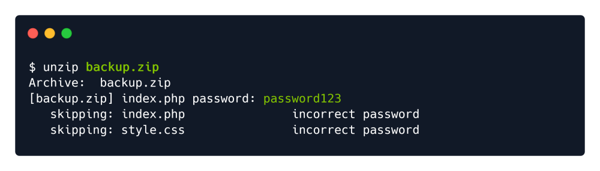
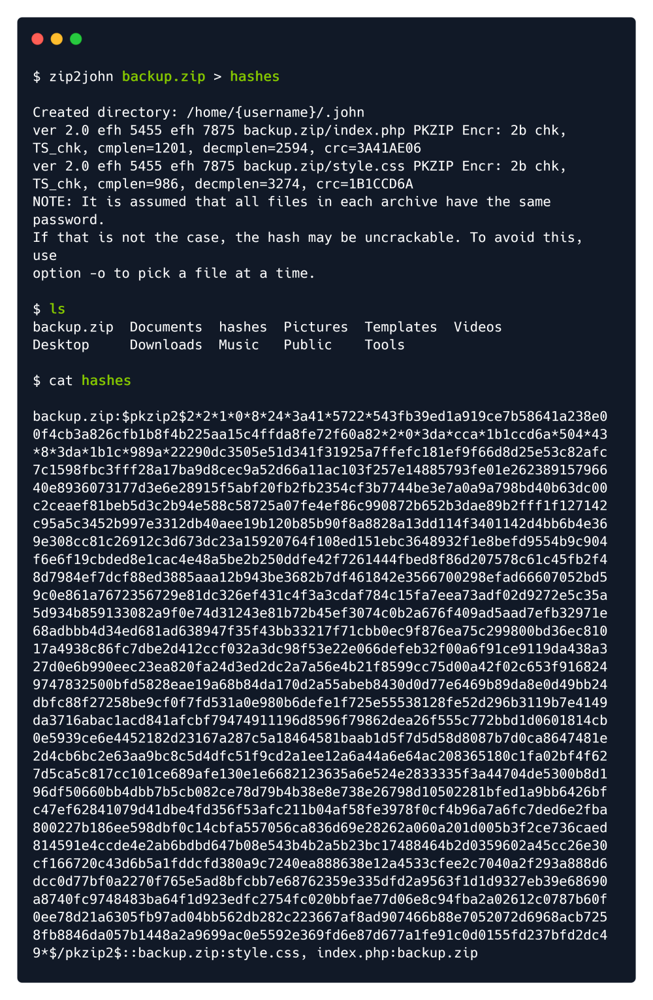

john the ripper
Password cracking by brute force.
We do some random tries.

John the Ripper is a free password cracking software tool. Originally developed for the
Unix operating system, it can run on fifteen different platforms (eleven of which are
architecture-specific versions of Unix, DOS, Win32, BeOS, and OpenVMS). It is among the
most frequently used password testing and breaking programs as it combines a number of
password crackers into one package, autodetects password hash types, and includes a
customizable cracker. It can be run against various encrypted password formats
including several crypt password hash types most commonly found on various Unix
versions (based on DES, MD5, or Blowfish), Kerberos AFS, and Windows NT/2000/XP/2003 LM
hash. Additional modules have extended its ability to include MD4-based password hashes
and passwords stored in LDAP, MySQL, and others.
apt install john
In order to successfully crack the password, we will have to convert the ZIP into the hash using the
zip2john module that comes within John the Ripper:

Now, we will type the following command:
john -wordlist=/usr/share/wordlists/rockyou.txt hashes
So it will load the wordlist & it will do a bruteforce attack against the hash stored in file hashes . Once the
password is cracked, we will use the --show option to display the cracked password.

We got the password: 741852963
John with few specific options
john hash --format=Raw-SHA512 --wordlist=rockyou.txt --rules=jumbo --fork=4
John for cracking a user's hash received from Database:
john gamer_hash --wordlist=/usr/share/wordlists/rockyou.txt --format=Raw-SHA256
To view it again:
john gamer_hash --show --format=Raw-SHA256
Cracking Linux System Passwords:
We need to dump /etc/passwd --→ password.txt and /etc/shadow --→ shadow.txt
unshadow password.txt shadow.txt > crackMe.txt
This will put the password hashes in its place in the Output file.
john --wordlist=/usr/share/wordlists/rockyou.txt crackMe.txt
Cracking Paraphrase from ID_RSA

Get the complete id_rsa contents into a file. (Say kay_id_rsa)
chmod 600 kay_id_rsa
ssh2john kay_id_rsa > john_ssh_hash
john --wordlist=/usr/share/wordlists/rockyou.txt john_ssh_hash
We found the Paraphrase for kay_id_rsa
Credentials Found
Username: kay
Paraphrase: beeswax
We can now login to SSH with the kay_id_rsa and the cracked paraphrase